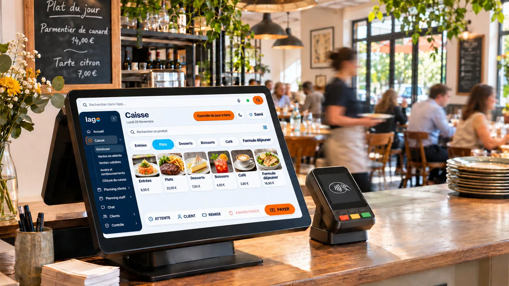
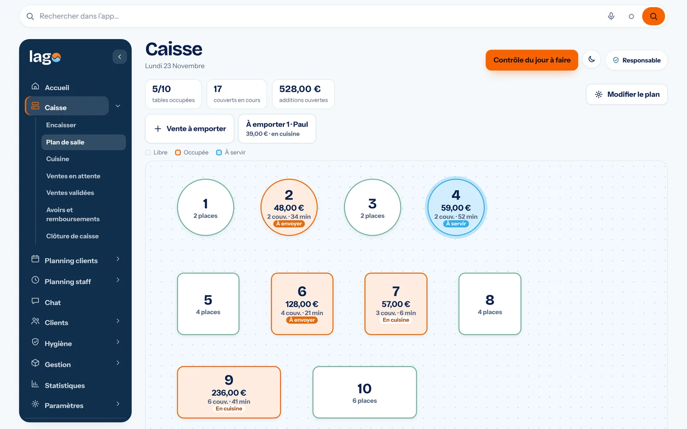
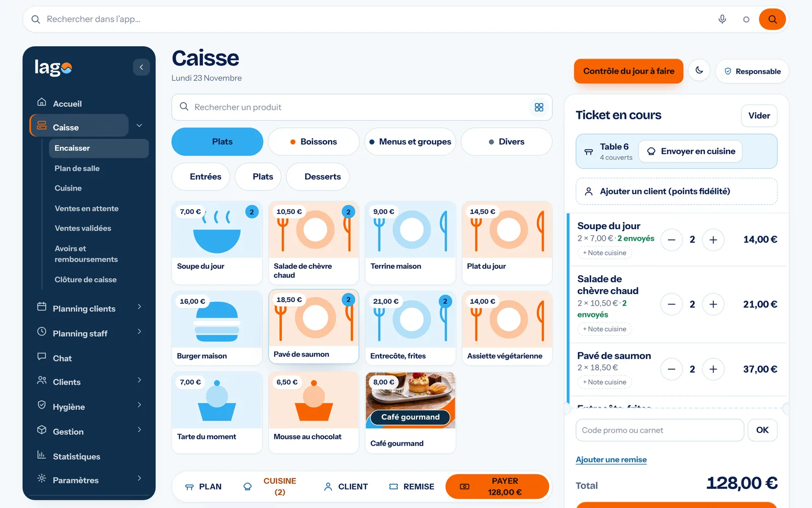
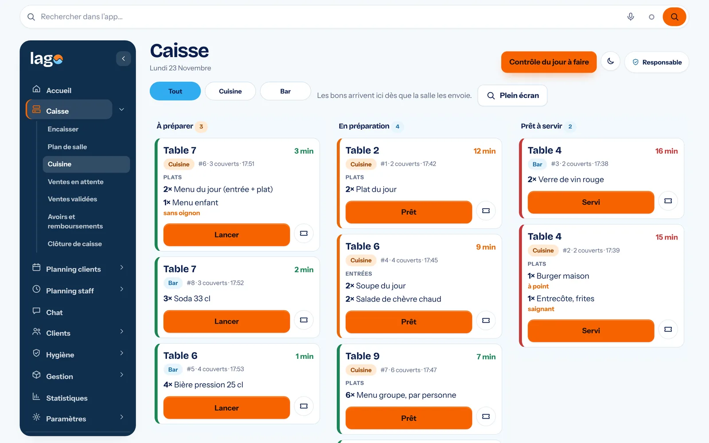
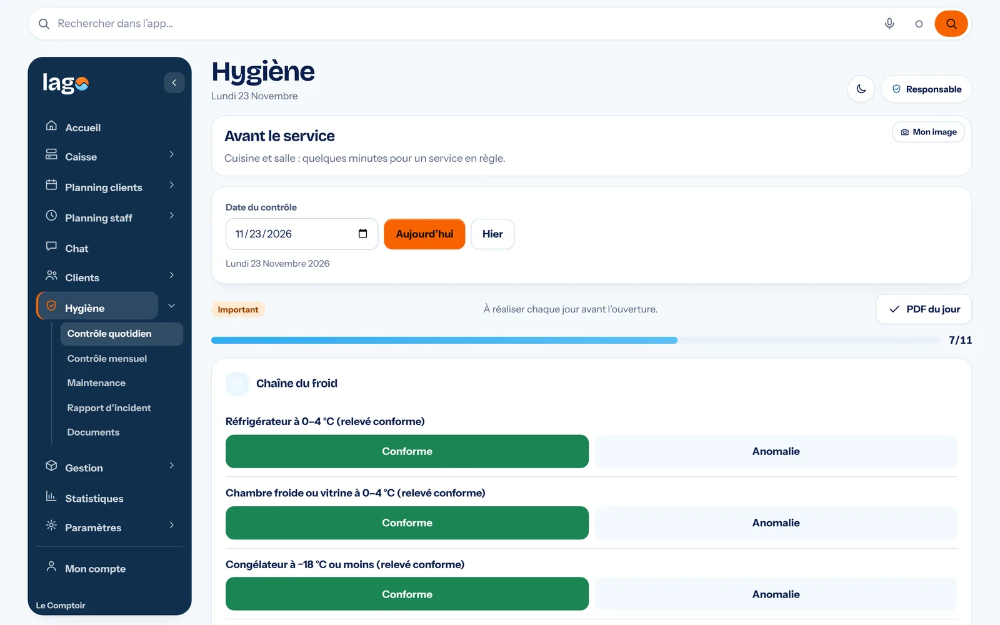
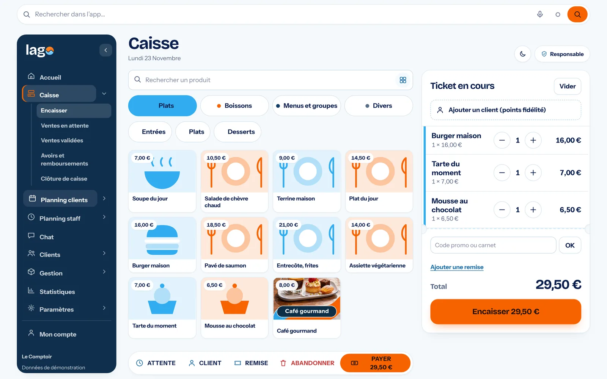

Une caisse rapide et conforme pour votre restaurant ou votre café
Plan de salle, addition par table, envoi en cuisine et au bar, TVA à 10 % ou 20 % par article, titres-restaurant et hygiène : Lago tient le rythme du service.

Ce qui complique votre service, Lago le simplifie.
« Au coup de feu, on perd la trace des commandes. »
Une addition par table
Le plan de salle montre chaque table, son addition et le temps écoulé.
« La cuisine reçoit des bons illisibles, ou trop tard. »
Cuisine et bar servis séparément
Chaque plat part en cuisine, chaque boisson au bar, avec la note du serveur.
« À l’addition, chacun veut payer sa part. »
Addition partagée, titres-restaurant
Plusieurs règlements sur un même ticket, dont les titres-restaurant.
« Entre TVA à 10 % et à 20 %, on se trompe de taux. »
La TVA par article
Chaque article porte son taux, le ticket le détaille.
« Un client allergique demande ce que contient le plat. »
Allergènes par plat
Les 14 allergènes par produit, et un tableau prêt à imprimer.
« Et si la DDPP passait demain ? »
Hygiène tracée au jour le jour
Relevés quotidiens, contrôle mensuel et PDF à présenter.
Lago, logiciel de caisse pour restaurant
Lago est un logiciel de caisse pour restaurant, café et bar : caisse enregistreuse tactile, plan de salle, envoi en cuisine, TVA par taux, addition partagée, titres-restaurant, allergènes, hygiène, réservations, fidélité, statistiques et planning du personnel, dans une seule application.
Le vrai logicielLes écrans montrés sont des captures réelles de Lago.
Caisse conformeClôtures scellées, archives et attestation de l’éditeur.
Vos données restent à vousNi revendues, ni utilisées pour de la publicité.
Toujours à jourMises à jour automatiques, sans rien installer.
Ce qui change avec Lago
Vos tables d’un coup d’œil
Dessinez votre salle une fois : tables rondes, carrées ou rectangulaires, placées par glisser-déposer. Chaque table affiche son addition, ses couverts et le temps écoulé, et passe en bleu quand la cuisine a terminé.
- Addition ouverte par table, changement de table en un geste
- Vente à emporter au comptoir, avec le prénom du client
- Compteur de couverts et d’additions en cours


Capture réelle de Lago · données de démonstration
Une commande par table, envoyée en un geste
Le serveur prend la commande sur la tablette ou à la caisse, ajoute une note (sans oignon, à point) et envoie : les plats partent en cuisine, les boissons au bar. Entrées d’abord, plats ensuite : seul ce qui n’est pas encore parti est envoyé.
- Notes pour la cuisine sur chaque ligne
- Envoi par service : entrées, plats, desserts
- Ajout de plats sans renvoyer ce qui est déjà parti


Capture réelle de Lago · données de démonstration
Un écran cuisine, sans papier ni cris
La cuisine et le bar voient leurs bons arriver sur une tablette : à préparer, en préparation, prêt à servir, avec le temps d’attente qui passe de vert à rouge. Un bon peut aussi s’imprimer.
- Cuisine et bar séparés, filtre en un geste
- Alerte sonore à l’arrivée d’un bon
- Mode plein écran pour la tablette de cuisine


Capture réelle de Lago · données de démonstration
Hygiène et allergènes, tenus sans y penser
Relevés de la chaîne du froid, nettoyage, issues de secours : le contrôle quotidien se valide en quelques touches, avec le nom du responsable, et s’exporte en PDF. Les 14 allergènes se renseignent produit par produit.
- Contrôle quotidien, mensuel et rapport d’incident
- Tableau des allergènes à imprimer
- Archives et PDF à présenter lors d’un contrôle


Capture réelle de Lago · données de démonstration
Un encaissement qui suit le service
Le client paie en carte, en espèces, en titres-restaurant, ou en plusieurs fois. Chaque article porte son taux de TVA, le ticket détaille la TVA par taux et rappelle la table, et les clôtures sont scellées.
- Plusieurs règlements sur un même ticket
- Titres-restaurant comme moyen de règlement
- TVA par taux et clôtures inaltérables


Capture réelle de Lago · données de démonstration
Les petits plus qui font la différence
Réservations
Réservations par créneau et page de réservation à intégrer à votre site.
Fidélité
Points et paliers pour vos habitués.
Planning de l’équipe
Horaires, congés et chat d’équipe.
Statistiques
Ventes par jour, par catégorie et meilleures ventes.
Trois étapes pour démarrer
Une démo sur vos activités
Nous vous montrons Lago avec vos tarifs, vos horaires et votre façon de travailler.
Une proposition adaptée
Vous recevez une offre selon la taille de votre établissement et les modules utiles.
Une mise en route rapide
Vous saisissez vos articles et vos horaires, puis invitez l’équipe avec un simple lien.
Restaurant : vos questions
Lago gère-t-il le plan de salle et l’envoi en cuisine ?
+
Oui. Vous dessinez votre salle, chaque table porte sa propre addition, et les commandes partent en cuisine ou au bar depuis la caisse. La cuisine les suit sur un écran de tablette, avec un bon imprimable si vous le souhaitez.
Peut-on envoyer les entrées d’abord, puis les plats ?
+
Oui. Au moment d’envoyer, vous cochez ce qui part tout de suite et ce qui attend. Ce qui est déjà parti n’est jamais renvoyé.
Faut-il une imprimante en cuisine ?
+
Non. Une tablette suffit : les bons s’affichent à l’écran avec une alerte sonore. Vous pouvez aussi imprimer un bon.
Peut-on encaisser des titres-restaurant ?
+
Oui, Lago les enregistre comme un moyen de règlement distinct, visible sur le ticket et dans les ventes. Le règlement lui-même passe par votre terminal habituel.
Comment gérer les allergènes ?
+
Vous renseignez les 14 allergènes de chaque produit et vous imprimez le tableau pour vos clients. Les allergènes s’affichent aussi sur la ligne de commande. La vérification des recettes reste de votre responsabilité.
Lago aide-t-il pour l’hygiène (HACCP) ?
+
Il propose des contrôles quotidiens (chaîne du froid, nettoyage), un contrôle mensuel et un rapport d’incident, validés avec le nom du responsable et exportables en PDF. Votre plan de maîtrise sanitaire reste le vôtre.
Peut-on avoir plusieurs taux de TVA ?
+
Oui. Chaque article a son taux, et le ticket détaille la TVA par taux.
Peut-on partager l’addition ?
+
Oui. Un même ticket peut être réglé en plusieurs fois et par plusieurs moyens de paiement, par exemple en partie par carte et en partie en espèces.
Voyons Lago dans votre restaurant.
Une démonstration gratuite et sans engagement, sur vos propres activités.